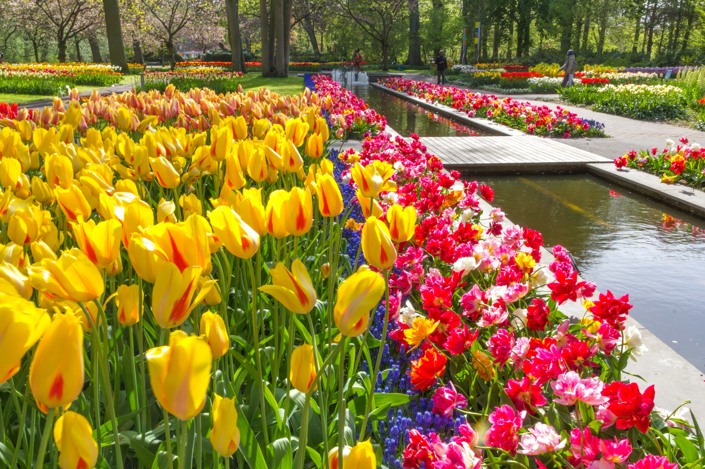
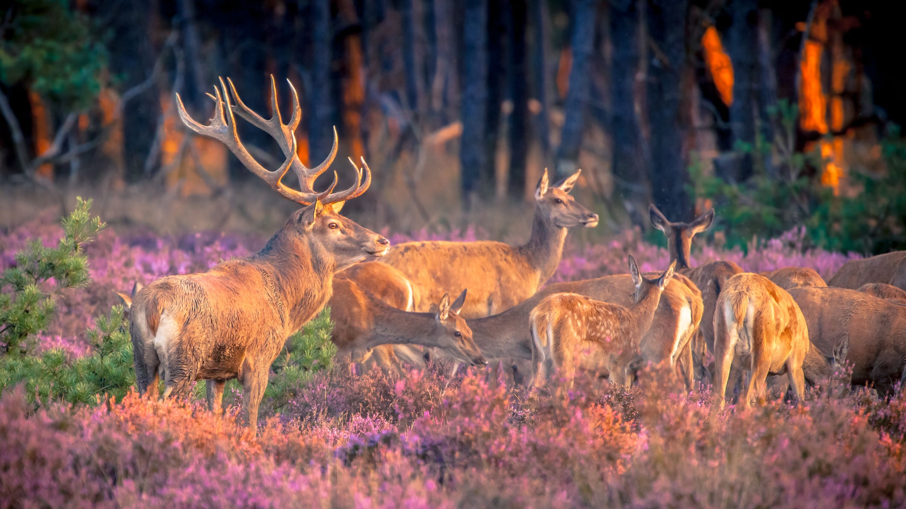
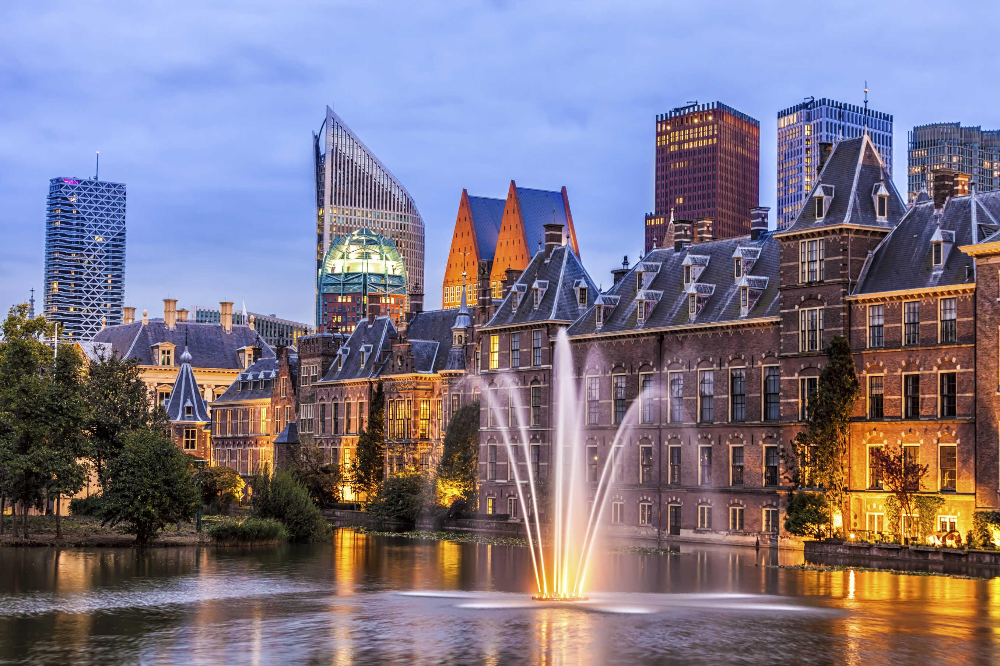
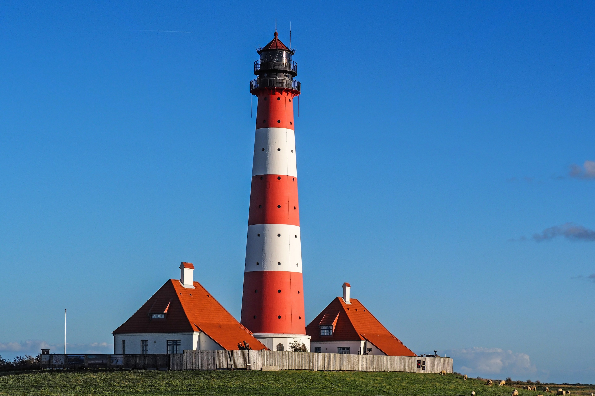
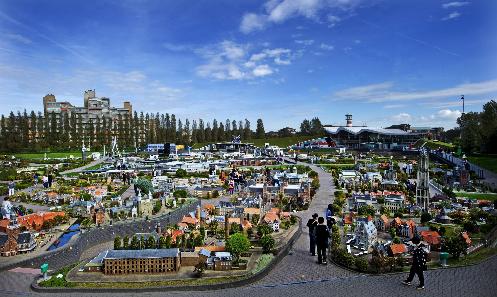
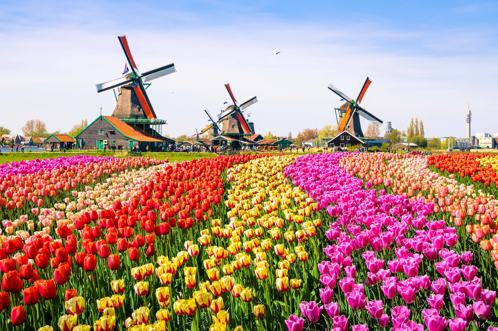
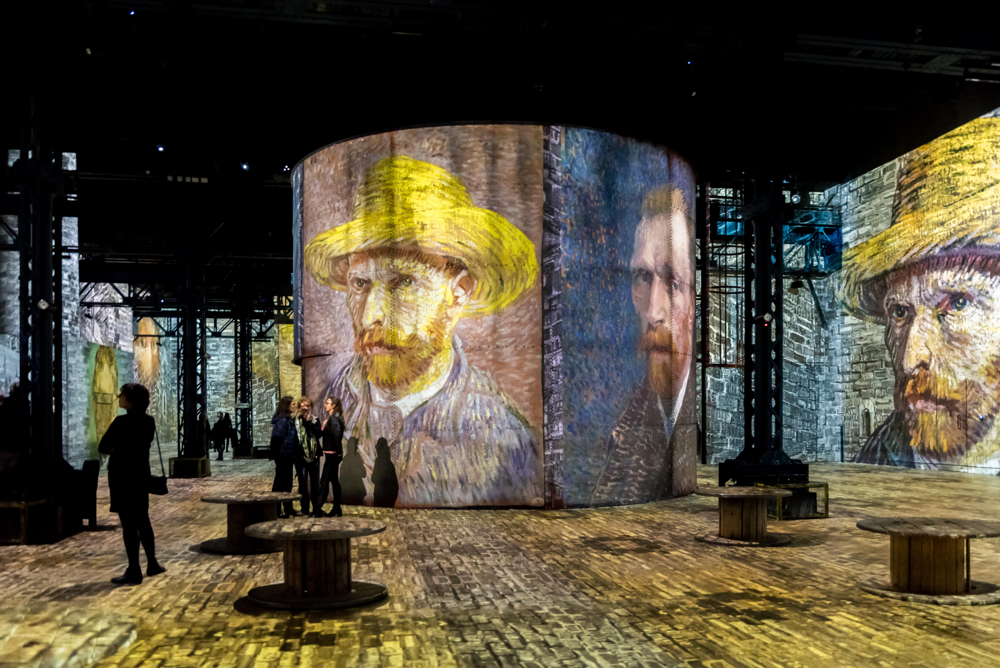
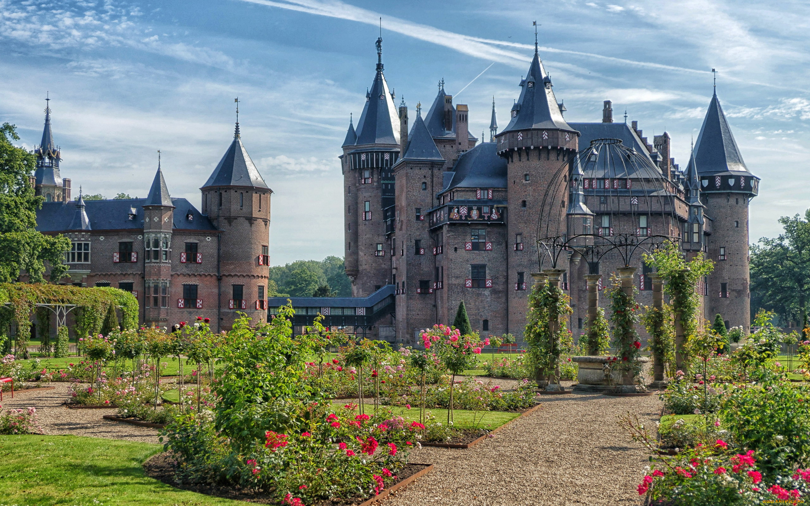

Highlights
Popular Destinations









The Netherlands unfolds as a country shaped by balance, beauty, and ingenuity. Canals weave between tulip fields and windmills, while sleek design and sustainable living reflect a future built on creativity and care. It is a place where art and everyday life blend naturally, and where tradition remains alive through innovation, craftsmanship, and community.
Picture sunlight glimmering on still canals, the rhythmic turn of windmill blades, and the laughter echoing from a café along the water's edge. The scent of fresh stroopwafels drifts through cobbled streets, and bicycles glide past flower stalls bursting with color. Here, life moves with intention, guided by harmony and simplicity.
Water glistens beneath soft morning light, reflecting skies that seem to stretch forever. Windmills turn slowly in the distance, and the faint aroma of coffee mingles with the sweetness of fresh pastries from a nearby stall. Life flows at an easy pace here, built on connection, craft, and the quiet rhythm of everyday grace.
With every moment, the country reveals a deeper layer of its character. You might glide along a canal lined with tulips, wander through markets alive with color, or pause to watch artists at work beside the water. Hospitality comes naturally, carried in simple gestures and genuine smiles.
As the days pass, layers of creativity and culture unfold in subtle ways. You might watch painters capture light beside the harbor, hear church bells echo over rooftops, or share stories with locals in a candlelit café. What remains after you leave is not only memory, but a quiet appreciation for the grace woven into everyday living.
Wander through flower-filled markets, canal-side boutiques, and artisan workshops where craftsmanship thrives. Take home Delft pottery, handwoven textiles, or locally made cheese and chocolates.
Savor the comfort of Dutch cuisine with hearty stamppot, golden fries topped with rich sauces, and delicate pancakes served with syrup or fresh fruit.
Begin your morning with strong coffee beside the water, then enjoy a cold Dutch beer or a glass of crisp white wine as the sun sets.
Getting around the Netherlands is smooth and efficient thanks to its excellent train network, reliable buses, and ferries that link coastal regions.
Public transportation is easy to navigate, with trams, buses, and bike rentals available almost everywhere. Walking or cycling through historic quarters and canals offers the best way to experience daily Dutch life.
Move beyond the main hubs to explore the country's quieter corners. Pedal along scenic routes through the countryside, visit centuries-old windmills surrounded by wildflowers, or wander coastal dunes alive with birdsong.
Central European Time (CET), which is GMT+1, and observes daylight saving time from late March to late October.
Uber, Bolt, and local taxi services are available in most urban areas, offering safe and convenient transportation.
The Netherlands uses 230V electricity with a frequency of 50Hz. Outlets typically fit plug types C and F, so travelers from other regions may need an adapter.
The Netherlands has a mild maritime climate influenced by the North Sea, with cool summers and relatively gentle winters. Rain can fall throughout the year, keeping the landscape lush and green.
Dutch scenery and culture have appeared in international productions such as The Fault in Our Stars, Ocean's Twelve, and Girl with a Pearl Earring. The nation is home to cultural icons like painter Vincent van Gogh, filmmaker Paul Verhoeven, and actress Famke Janssen.
Emergency Services: 112
Police: 112
Medical Emergency: 112
Fire Brigade: 112
Country Code: +31







